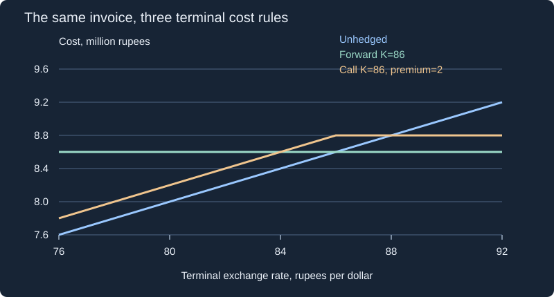
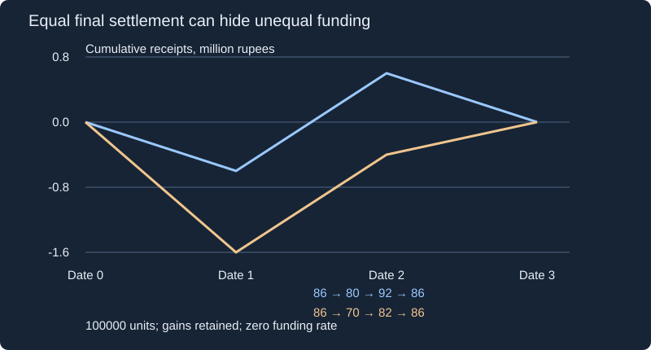

Interactive numerical laboratory
These two finite experiments connect cash-flow replication to numbers. They run locally in the browser and use synthetic inputs. The chapter Python laboratories provide a broader set of calculations and assertions; each chapter links its downloadable code.
A hedge changes a cost curve and a funding path
For Chapter 1's importer, a fixed 100,000-dollar invoice costs $100{,}000X_T$ rupees without a hedge. A matched forward at 86 fixes cost at 8.6 million rupees; a call at the same strike with a two-rupee-per-dollar premium caps the zero-funding-rate cost at 8.8 million. Fig. 1 plots the derived cost rules over a range of synthetic exchange rates. The call preserves the benefit of cheaper dollars but charges a premium in every state.
On narrow screens, pan the charts sideways to keep their labels readable.

The futures comparison in Fig. 2 uses two quotation paths with the same start and end. A 100,000-unit long position ends with zero cumulative variation-margin receipts on both paths, but one path requires a larger interim funding deficit. Gains are retained and financing is set to zero. Actual initial collateral and margin rules would add cash needs.

Cash and carry: a delivery price is not a forecast
Let $S$ be the current price of one unit of a non-income-producing, storable investment asset, $r$ a constant continuously compounded funding rate, and $T$ time in years. Assume borrowing/lending at that common rate, frictionless trading, no storage cost, and feasible long/short replication. Buying the asset with borrowed money requires repayment $Se^{rT}$ at maturity. A forward delivering that same asset must therefore have delivery price $F=Se^{rT}$ under the no-arbitrage assumptions developed in Chapter 2.
The input below asks for the rate in percent and converts it to a decimal before exponentiation. Raising $r$ increases the funding required to carry the asset; it does not assert a change in the physical expected future spot price. Income, storage costs, collateral or funding asymmetry require a modified model.
Forward delivery price:
Try zero time, then zero rate, then a longer holding period. The zero-time limit should return the spot price. This is a model calculation, not a quote obtained from an exchange.
One-step call replication
Let a stock cost $S$ now and become $Su$ or $Sd$ in one period, with factors $u>d>0$. Let $R>0$ be the bank-account growth factor over the same period and $K$ a European call strike. The two call payoffs are $c_u=\max(Su-K,0)$ and $c_d=\max(Sd-K,0)$.
A portfolio of $\Delta$ shares and $B$ in the bank now reproduces both payoffs when $\Delta Su+BR=c_u$ and $\Delta Sd+BR=c_d$. Subtracting gives $\Delta=(c_u-c_d)/(S(u-d))$, and the lower-state equation gives $B=(c_d-\Delta Sd)/R$. The call value is $\Delta S+B$.
The same value can be written $[pc_u+(1-p)c_d]/R$, where $p=(R-d)/(u-d)$. This weight lies strictly between zero and one when $d<R<u$, the one-period no-arbitrage interval. It is a pricing weight implied by tradable payoffs; this experiment does not estimate the physical probability of an up move.
Call value: ; shares: ; risk-neutral up weight:
For the defaults, the up payoff is 20, the down payoff is zero, the hedge has 0.5 shares, and the pricing weight is 0.625. The bank position is $-40/1.05$, so the initial portfolio costs $50-40/1.05=11.9047619$ to the shown precision. Change $R$ outside the interval and inspect the rejection. Allowing a negative pricing weight without identifying the arbitrage would hide a violated assumption.
The calculations are exact for the specified two-state frictionless model up to floating-point rounding. They do not establish completeness in a richer market, continuous hedge feasibility, or a correct volatility model for observed prices. Chapters 18–21 develop those distinctions.
Independent educational notes. Not an official NPTEL or IIT Roorkee publication, affiliation, or endorsement. Educational models are presented under stated assumptions.